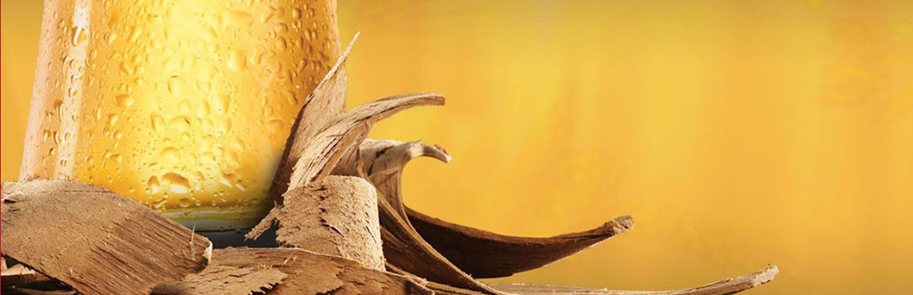

Лагер у перекладі з німецької мови означає “відпочивати”. Пивовари дуже люблять етап витримки, адже мають у цей час законний відпочинок. Жартуємо. BUD витримується в охолоджених цистернах протягом 21-го дня. Це невід’ємна частина створення чистого, освіжаючого, довершеного смаку BUD.

Витримка на буковiй стружцi
У процесі бродіння пива BUD використовується букова стружка. Вона покращує бродіння, створюючи більш ігристі бульбашки і надаючи м'якість характерному смаку BUD. У процесі фільтрації букові стружки вилучаються, а пиво розливається у пляшки.
Зізнатись чесно, ми схиблені на якості. Щодня броварня тестує свою продукцію на відповідність жорстким регламентам. Лише визнані досконалими зразки розливаються у пляшки. Будьте впевнені: BUD, який ви зараз п'єте, це пиво найвищого ґатунку.
Відтоді, як Адольфус Буш удосконалив рецепт BUD у 1876 році, ми нічого у ньому не змінювали. Технології вийшли на новий рівень, але важливі 7 кроків збереглися такими ж, як колись.